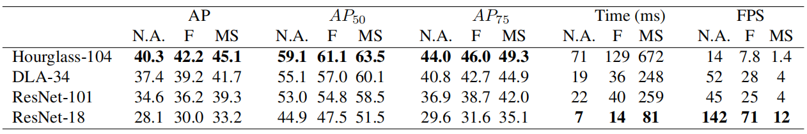

论文地址：https://arxiv.org/pdf/1904.07850.pdf
代码地址： https://github.com/xingyizhou/CenterNet
前言
该论文于2019年发表在arXiv上，但该作者团队另一篇《Tracking Objects as Points》已于2020被ECCV接受，这篇已被接受的论文主要是将CenterNet网络运用在了目标跟踪的任务上。本文主要介绍在目标检测任务上的《Objects as Points》工作。
1、Background
1.1、Task
Object Detection：找出图像中所有感兴趣的目标，确定它们的位置和类别。
1.2、Problem
该论文对One-stage Detectors和Two-stage Detectors的方法概述：
- One-stage Detectors: 在图像上滑动anchors（遍历滑动窗口策略），在不指明box内容的情况下，直接对其进行分类。
- Two-stage Detectors: 对于每个潜在的box再次进行特征计算，然后对这些特征进行分类。
Related Work:
该论文在Related Work部分主要从Object detection by region classification（RCNN、Faster-RCNN）、Object detection with implicit anchors（Faster-RCNN）、Object detection by keypoint estimation（CornerNet、ExtremeNet）、Monocular 3D object detection（Deep3Dbox、3D RCNN）四个方面进行了简介，概述了这些的方法目前存在的缺陷，以及作者所提方法与其中类似方法的区别。
Drawback：
- 基于滑动窗口的目标检测器，由于需要枚举所有有可能的目标的位置和维度信息，所以很浪费算力。
- One-stage Detectors和Two-stage Detectors的方法大多需要post-processin（NMS），但这些后处理步骤是很难进行微分和训练。
2、Motivation
- 作者将Object Detection任务转换为Keypoint Estimation任务。
- 关于Object Detection任务中的一些属性，例如尺寸、位置、方向和姿势等，可直接对中心点的图像特征回归得到。
3、Method
该方法实现Object Detection的过程为：Input image $\Longrightarrow$ Heatmap $\Longrightarrow$ Peaks $\Longrightarrow$ Objects bounding box
3.1 Preliminary
$\widehat{Y}$是一个keypoint heatmap，表示预测结果。$C$表示keypoint的类型数量，不同任务（人体姿态估计、目标检测等）有不同数量的类型。
$$\widehat{Y} \in[0,1]^{\frac WH \times \frac WH \times C} \left\{
\begin{array}{ccc}
0 & & background\\
1 & & detected \ keypoint
\end{array}
\right.
$$
$N$表示图像$I$中keypoint的数量。$\alpha$和$\beta$为超参数。Training objective如下：
$$ L_k=-\frac{1}{N} \sum_{xyc} \left\{
\begin{array}{ccc}
(1-\widehat{Y}_{xyc})^\alpha \log (\widehat{Y}_{xyc}) & &if \ Y_{xyc}=1 \\
(1-Y_{xyc})^\beta(\widehat{Y}_{xyc})^\alpha \log(1-\widehat{Y}_{xyc}) & &otherwise
\end{array}
\right.
$$
局部offset $\widehat{O} \in R^{\frac WH \times \frac WH \times 2}$，用$L_1$Loss训练所得：
$$L_{off} = \frac 1N \sum_{p} \left\vert \widehat{O}_{\tilde{p}}-(\frac pR - \tilde{p}) \right\vert$$
3.2、Objects as Points
尺寸预测$\widehat{S} \in R^{\frac WH \times \frac WH \times 2}$，用$L_1$Loss训练所得：
$$L_{size} = \frac 1N \sum_{k=1}^N \left\vert \ \widehat{S}_{p_k} -s_k\right\vert$$
Training objective：
$$L_{det} + L_k + \lambda_{size}L_{size} + \lambda_{off}L_{off}$$
从keypoint中得到bounding box：
$$(\widehat{x}_i+ \delta\widehat{x}_i - \widehat{w}_i/2 , \ \widehat{y}_i+ \delta\widehat{y}_i - \widehat{h}_i/2 , \ \widehat{x}_i+ \delta\widehat{x}_i + \widehat{w}_i/2 ,\ \widehat{y}_i+ \delta\widehat{y}_i + \widehat{h}_i/2)$$
3.3、Tasks
3D detection
每个中心点还需要三个的属性：depth，3D dimension，orientation。
- depth：a single scalar
- 3D dimension：three scalars.
- orientation：a single scalar by default.
Human pose estimation
对图像中的每个人体实例估计$k$个 2D的人体关节位置。首选使用像素上的联合offsets直接回归可得，其次估计$k$个人体关节heatmaps，然后将最初的人体关节预测值去拟合heatmaps上最近的检测得到的keypoints上。
该论文实验部分主要用到的Backbone如下：
4、Experiments
4.1、Comparison
在COCO validation上，使用不同的Backbones和测试选项所得结果：

与其他Real-time detectors对比结果：
在COCO test-dev上与其他State-of-the-art方法的对比结果：
在Pascal VOC 2007 test上的对比结果：
4.2、Ablation Study
在Center point collision和IoU based NMS方面：
在分辨率回归Loss方面：
在Bounding box和训练策略方面
4.3、Task
在KITTI evaluation上的3D detection，结果如下：
在MS COCO dataset上的Pose estimation，结果如下：
定性分析，结果如下：
5、Main contribution
1、该论文将Object Detection任务看做边界框中心点估计任务。
2、该论文提出了不带有例如NMS的post-processing的CenterNet方法。
3、该网络可以广泛地应用在其他任务上。
4、该方法性能优于基于边界框的检测器
“我对我的梦有种迷恋、大于痛苦大于这世界。”
——尤长靖《一颗星的夜》